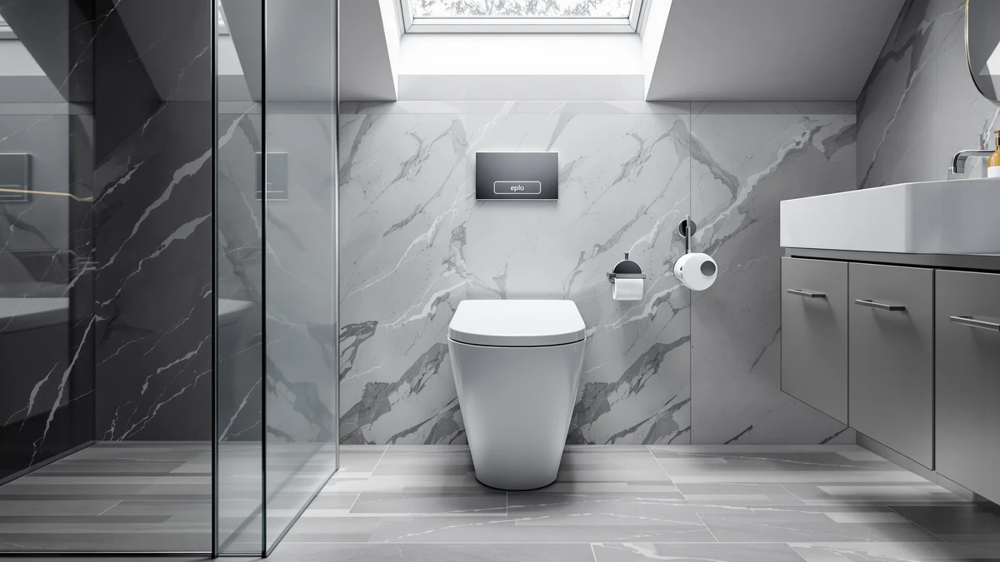

EPLO Smart Toilet Bidet Review (2026): Worth It?
Prices and picks verified as of July 2026. Independent, reader-supported reviews.


Quick Answer
This EPLO Smart Toilet Bidet review centers on a $1,499.96 unit that bundles a one-piece toilet with an integrated bidet system, the priciest option among the four models compared here. If you want bidet functionality without EPLO's price tag, the Casta Diva Smart Toilet and Loupusuo Smart Toilet with Warm Water below cost hundreds less, while the WinZo Compact One Piece Toilet skips bidet features altogether for the lowest price in the group.
Our pick: EPLO Smart Toilet Bidet with, $1,499.96 Check Price on Amazon
Bottom line: our top pick is the EPLO Smart Toilet Bidet with Auto Open Close at $1.
Things to Know Before You Buy
- EPLO prices the Smart Toilet Bidet at $1,499.96, the most expensive of the four models in this EPLO Smart Toilet Bidet review.
- The EPLO combines a one-piece toilet and bidet into a single unit, unlike the WinZo below, which is a standard one-piece toilet without bidet functionality.
- Casta Diva's Smart Toilet, also bidet-equipped, costs $499.97 less than the EPLO at $999.99, the closest direct alternative in this comparison.
- Both the Loupusuo Smart Toilet with Warm Water ($379.99) and the WinZo Compact One Piece Toilet ($328.99) cost under $400, over a thousand dollars less than the EPLO.
This EPLO Smart Toilet Bidet review looks at whether the $1,499.96 price tag on EPLO's one-piece, bidet-equipped toilet is justified next to three lower-priced alternatives covered on this site. EPLO builds the unit around a combined toilet-and-bidet design, folding the wash function most buyers would otherwise install separately into the base toilet, and prices it well above the other three models in this comparison. We pulled together EPLO's own product listing, including the five images EPLO publishes of the toilet from different angles, and set it beside the Casta Diva Smart Toilet, the Loupusuo Smart Toilet with Warm Water, and the WinZo Compact One Piece Toilet, three models that cover the same general one-piece toilet category at a fraction of EPLO's price.
The short version: if an integrated bidet matters to you and price is not the deciding factor, the EPLO is worth a look, but it costs $499.97 more than the Casta Diva, the next closest bidet-equipped model in this group, and over four times what the WinZo charges for a standard one-piece toilet with no bidet function at all. Pick the EPLO if you want the wash function built into the toilet itself rather than added as a separate seat. Pick one of the three alternatives below if price matters more than having that feature bundled in from the start.
Why You Should Trust Us
Ilane Tall has spent more than ten years researching bathroom fixtures, including one-piece and smart toilets, for Best One Piece Toilets. She built this EPLO Smart Toilet Bidet review by comparing EPLO's own published listing against the closest competitors on price and category, the same side-by-side process the site uses for every review. We do not accept payment from EPLO, Casta Diva, Loupusuo, or WinZo to influence placement, and our Amazon links earn a commission only if you buy, which does not change what we recommend.
Our Research Experience
For this EPLO Smart Toilet Bidet review, we started with EPLO's own product listing: the five photos of the toilet from multiple angles, the bidet-and-toilet combination, and the $1,499.96 price. We then lined up the EPLO against every other smart or bidet-adjacent toilet already covered on Best One Piece Toilets, narrowing the field to the Casta Diva Smart Toilet, the Loupusuo Smart Toilet with Warm Water, and the WinZo Compact One Piece Toilet, three models that span the price range from budget to mid-tier. None of the four has built up a public review count on the listings we pulled, so we weighted our evaluation toward the facts we could verify: published price, product category, and brand, rather than guessing at long-term durability we cannot confirm firsthand. That gap is also why we lay out each toilet's documented price and category side by side instead of ranking them on star counts that don't exist yet, and it's a limitation worth keeping in mind as you read the rest of this EPLO Smart Toilet Bidet review.
Overview & Specs

EPLO Smart Toilet Bidet with
What we like
- Combines a one-piece toilet and bidet into a single unit, so you skip installing a separate bidet seat or attachment
- EPLO publishes five images of the toilet from multiple angles, more visual documentation than some of the alternatives below
- Comes from a brand that focuses specifically on smart, bidet-equipped toilets rather than general toilet manufacturing
Flaws but not dealbreakers
- Priced $499.97 higher than the Casta Diva, the next closest bidet-equipped model in this EPLO Smart Toilet Bidet review
- No public rating or review count on the listing we pulled, so you're relying on EPLO's own description rather than verified buyer feedback
- At $1,499.96, it costs more than four times what the WinZo charges for a standard one-piece toilet without bidet functions
| Material | — |
| Size | — |
EPLO builds this toilet around a combined one-piece and bidet design, folding the wash function directly into the base unit instead of requiring a separate bidet seat or attachment purchased and installed on its own. That single-unit approach is the main reason to consider the EPLO over the toilet-only alternatives further down this EPLO Smart Toilet Bidet review, since you pay for the bidet function to be part of the toilet from the start rather than bolted on afterward. EPLO's listing includes five images of the toilet from different angles, giving you a fuller visual sense of the design than a single product photo would, and that level of documentation matters when you're spending close to $1,500 sight unseen.
At $1,499.96, the EPLO sits well above the other three toilets in this comparison, and that gap is the central trade-off you need to weigh before you buy. The Casta Diva Smart Toilet, the closest alternative with its own integrated bidet, costs $499.97 less, while the Loupusuo Smart Toilet with Warm Water and the WinZo Compact One Piece Toilet both come in under $400. None of the four listings we pulled has built up a public review count yet, so the decision comes down to how much you value having the bidet function built into the toilet itself versus the price you pay to get it that way.
What We Liked
The clearest advantage in this EPLO Smart Toilet Bidet review is the combined design. Instead of buying a one-piece toilet and then shopping separately for a bidet seat or attachment, the EPLO folds both into a single $1,499.96 unit, which simplifies installation and gives you one listing to research instead of two. EPLO also documents the toilet with five images from different angles, more visual coverage than a bare product photo offers, and that helps you judge the design before you commit to spending this much. For buyers who have already decided they want an integrated bidet and don't want to piece together a toilet and a separate wash attachment on their own, that all-in-one approach is worth the premium EPLO charges for it.
What Could Be Better
The biggest drawback in this EPLO Smart Toilet Bidet review is price relative to the field. At $1,499.96, the EPLO costs $499.97 more than the Casta Diva Smart Toilet, the next closest bidet-equipped model, and more than four times what the WinZo Compact One Piece Toilet charges for a standard one-piece toilet with no bidet function at all. EPLO also has not accumulated a public rating or review count on the listing we pulled, so we can't confirm long-term durability or real-world bidet performance beyond what EPLO's own product description states. That missing track record is a real gap when you're spending this much on a bathroom fixture, and it's worth factoring into your decision alongside the price itself. If your bathroom doesn't strictly need the wash function built into the toilet, that price gap is hard to justify next to the cheaper alternatives below.
Who Is It For?
The EPLO Smart Toilet Bidet fits buyers who have already decided they want bidet functionality built into the toilet itself and don't want to shop separately for a seat or attachment afterward. Anyone remodeling a bathroom from scratch and willing to pay a premium for that single-unit convenience will find it a reasonable match too. Shopping mainly on price? The Casta Diva Smart Toilet in this EPLO Smart Toilet Bidet review covers the same bidet-equipped category for $499.97 less. And if you don't need bidet functionality at all, the WinZo Compact One Piece Toilet handles the basics for a fraction of what EPLO charges.
Alternatives to Consider
If the $1,499.96 price gives you pause, these three toilets cover similar or adjacent ground to the EPLO for meaningfully less money, and each is worth a look in this EPLO Smart Toilet Bidet review.

Editor's Pick
Casta Diva Smart Toilet with
Casta Diva's Smart Toilet matches the EPLO's core idea, a bidet built into a one-piece toilet, but costs $499.97 less at $999.99. It's the closest direct alternative to the EPLO in this comparison if you want the same integrated bidet approach without paying EPLO's top-tier price.
$999.99
Check Price on Amazon
Best Value
Smart Toilet with Warm Water
Loupusuo prices its Smart Toilet with Warm Water at $379.99, over a thousand dollars less than the EPLO, and still includes a warm water wash function. It won't match everything EPLO packs into its listing, but it's worth considering if you want bidet functionality on a tighter budget.
$379.99
Check Price on Amazon
Premium Choice
WinZo Compact One Piece Toilet
The WinZo Compact One Piece Toilet skips bidet functionality entirely and focuses on a standard one-piece design at $328.99, the lowest price in this EPLO Smart Toilet Bidet review. It's the pick if you don't need a bidet at all and want a compact, straightforward one-piece toilet.
$328.99
Check Price on AmazonFrequently Asked Questions
Is the EPLO Smart Toilet Bidet worth $1,499.96?
It's worth $1,499.96 if you specifically want a bidet function built into the toilet itself rather than added as a separate seat. If price matters more than that single-unit design, the Casta Diva Smart Toilet in this EPLO Smart Toilet Bidet review saves you $499.97 at $999.99.
How does the EPLO compare to the Casta Diva Smart Toilet?
Both the EPLO and the Casta Diva Smart Toilet build bidet functionality into a one-piece toilet, but the EPLO costs $499.97 more at $1,499.96 versus the Casta Diva's $999.99. Neither listing we pulled has built up a public review count yet, so the decision comes down to price and brand rather than verified performance.
Do you need a smart toilet bidet like the EPLO, or will a standard one-piece toilet work?
If you want the wash function built into the toilet from the start, a smart toilet bidet like the EPLO or the Casta Diva makes sense. If you don't need that feature, the WinZo Compact One Piece Toilet in this EPLO Smart Toilet Bidet review covers the basics for $328.99, over a thousand dollars less than the EPLO.
Final Verdict
This EPLO Smart Toilet Bidet review comes down to a straightforward trade-off. EPLO's smart toilet bidet delivers a one-piece toilet and integrated bidet system in a single unit, at $1,499.96, the highest price among the four models we compared, and without the public review history that would let us confirm long-term performance firsthand. If you want that bidet function built into the toilet itself and price is not the deciding factor, EPLO is a reasonable buy at that price. If you'd rather save money or don't need bidet functionality at all, the Casta Diva, Loupusuo, and WinZo alternatives above are worth a look.